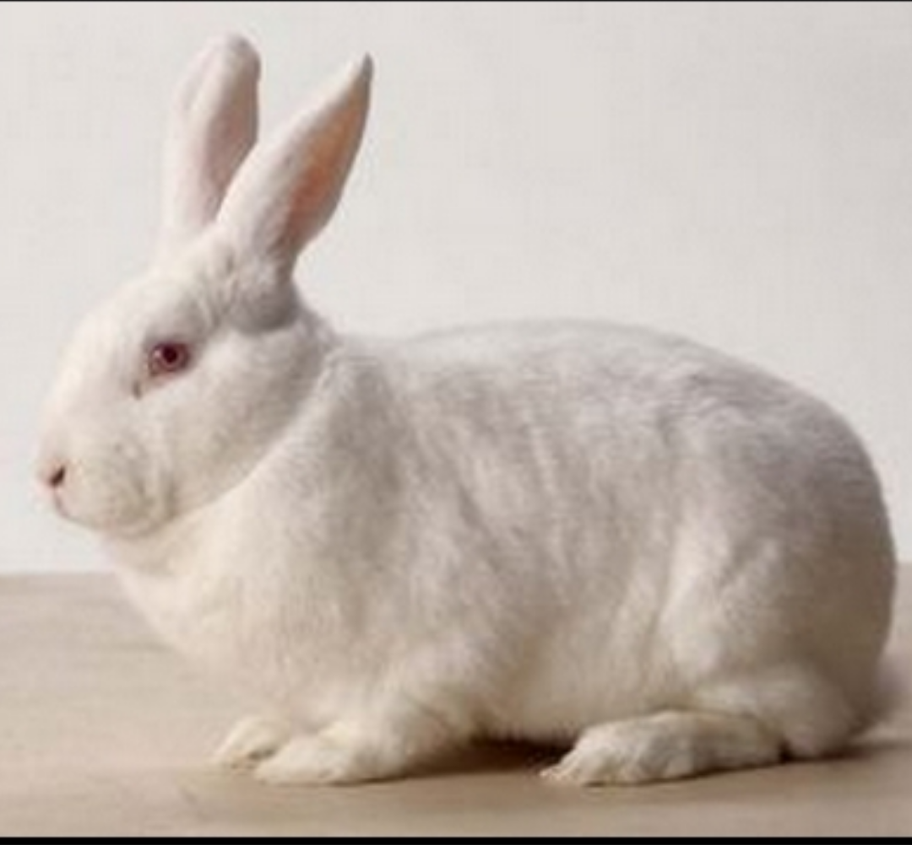

Rabbits
New! Introducing the New Zealand White Rabbit brought to you by Greenfellow Farms.
About Our Farm
We are a large scale rabbit breeder specializing in providing high quality rabbits for homesteading, medical research, fur, or general consumption. Our rabbits are fed an all natural pellet food diet combined with alfalfa hay straight from our very own farm.
We Are Natural
We are very proud to say that we do not use any antibiotics or hormones of any kind to raise our rabbits. We believe that by allowing nature to take its course, we can provide very healthy happy rabbits. You can rest assured that you are receiving the BEST quality rabbits available.
Rabbit manure:
This stuff is remarkable. It comes nicely packaged in a convenient, round, dry, pelleted form. As a fertilizer, fresh rabbit manure is approximately 2% nitrogen, 1% phosphorus and 1% potassium. Use it fresh on the garden for it will not burn plants. Use the small marbles to top-dress your lawn, or mulch roses, vegetables or flower beds. Or supercharge your compost pile and create an earthworm population explosion. This is definitely magic at its finest.
Fur:
The New Zealand white rabbits have fantastic fur that makes it very suitable for clothing. It can be easily dyed many different colors and makes it very valuable in the fur trade. Rabbits with high grades of fur are used to make fur coats and fur trimmings. The lower grades are used to make felt hats and glove linings.